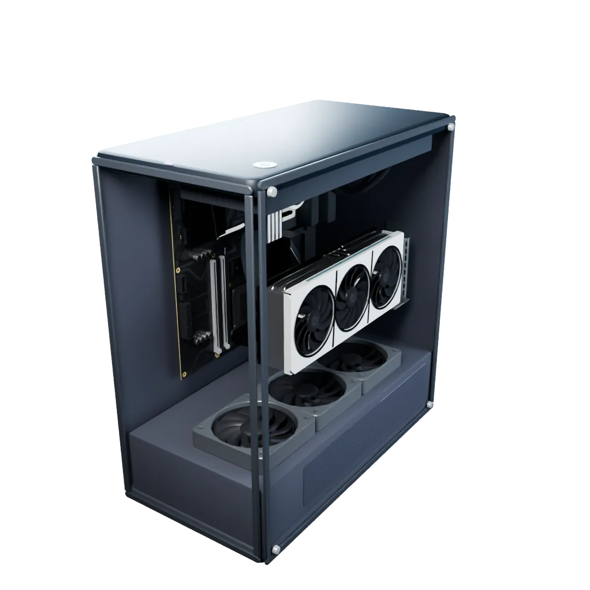

01 / EL SISTEMA
Todo empieza
con un impulso.
Una computadora. Cada pieza, conectada a una misma idea.
DESLIZÁ PARA EXPLORAR ↓
Cargando vista…
EL SIGUIENTE CAPÍTULO
Entender cada pieza.
Cuidar el conjunto.
Diagnóstico, reparación y mantenimiento. Conocé los servicios de JG Soluciones Informáticas.
HABLEMOS ↗VOLVER A DEV ↗